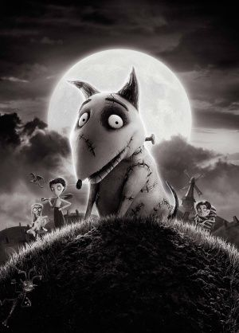
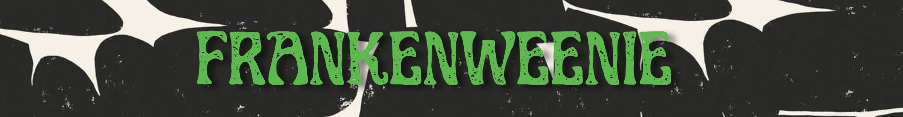

Ficha

Año: 2012 Duración: 87 minutos Dirección: Tim Burton Guion: John August Basada en: el cortometraje Frankenweenie de 1984 Género: Stop motion · Fantasía · Ciencia ficción · Comedia · Terror Producción: Walt Disney Pictures


Año: 2012 Duración: 87 minutos Dirección: Tim Burton Guion: John August Basada en: el cortometraje Frankenweenie de 1984 Género: Stop motion · Fantasía · Ciencia ficción · Comedia · Terror Producción: Walt Disney Pictures
Victor Frankenstein es un niño apasionado por la ciencia y por hacer películas caseras junto a su perro Sparky, su mejor amigo. Cuando Sparky muere inesperadamente después de ser atropellado, Victor no puede aceptar la pérdida. Inspirado por las enseñanzas de su profesor de ciencias, decide utilizar la electricidad para devolverle la vida. El experimento funciona y Sparky vuelve a casa, pero Victor intenta mantener su secreto oculto. Cuando otros niños descubren lo que ha hecho, comienzan a experimentar también con la ciencia y provocan una serie de criaturas y situaciones fuera de control. Inspirada en Frankenstein de Mary Shelley y en las películas clásicas de monstruos, la película combina humor, terror y una historia sobre la amistad, la pérdida y la dificultad de aceptar la muerte.
Un niño inteligente, introvertido y apasionado por la ciencia. Su relación con Sparky es el motor de toda la historia.
El perro de Victor. Es curioso, juguetón y extremadamente leal. Su muerte desencadena el experimento que cambia la historia.
Una compañera de Victor que comprende su sensibilidad y se convierte en una de sus principales aliadas.
Un niño extraño y solitario que descubre el secreto de Victor y quiere convertirse en su compañero de experimentos.
El profesor de ciencias de Victor. Sus enseñanzas despiertan en el niño la curiosidad necesaria para intentar devolverle la vida a Sparky.
Dirección: Tim Burton Guion: John August Producción: Walt Disney Pictures Música: Danny Elfman Voces principales: Charlie Tahan — Victor Frankenstein Frank Welker — Sparky Winona Ryder — Elsa Van Helsing Catherine O'Hara — Weird Girl y otros personajes Martin Landau — Sr. Rzykruski Martin Short — Sr. Frankenstein y otros personajes Atticus Shaffer — Edgar "E" Gore Christopher Lee — voz de Dracula
Frankenweenie recupera la historia del cortometraje de acción real que Tim Burton había realizado en 1984 y la transforma en un largometraje de stop motion. La película fue rodada completamente en blanco y negro y posteriormente presentada también en 3D. Para crearla se fabricaron más de 200 marionetas y diferentes versiones de los personajes principales para que varios equipos pudieran trabajar simultáneamente. La producción utilizó escenarios de gran tamaño y una enorme cantidad de elementos físicos. En promedio, un animador podía producir solamente unos pocos segundos de animación terminada por semana.
La película es una versión extendida y realizada en stop motion del cortometraje de acción real que Burton dirigió en 1984.
La estética monocromática homenajea directamente a las películas clásicas de monstruos y al cine de terror de los años 30.
Se fabricaron múltiples versiones del perro para poder utilizar diferentes modelos en distintas escenas y posiciones.
La producción creó alrededor de 200 marionetas para construir el enorme universo de la película.
La película combina elementos de Frankenstein de Mary Shelley con referencias al cine de monstruos de Universal.
Sparky es una reinterpretación del monstruo clásico: aunque vuelve de la muerte, sigue siendo esencialmente el mismo perro cariñoso que Victor perdió.
PALETA Blanco, negro y una amplia gama de grises. ESTÉTICA Gótica, científica, retro y expresionista. PERSONAJES Rasgos exagerados, ojos grandes, cuerpos estilizados y proporciones caricaturescas. ESCENARIOS Casas suburbanas, laboratorios, cementerios, escuelas y paisajes inspirados en películas clásicas de monstruos. ILUMINACIÓN Contrastes fuertes, sombras profundas y luces dramáticas. REFERENCIAS Frankenstein · Cine de monstruos de los años 30 · Terror clásico · Ciencia ficción · Expresionismo.